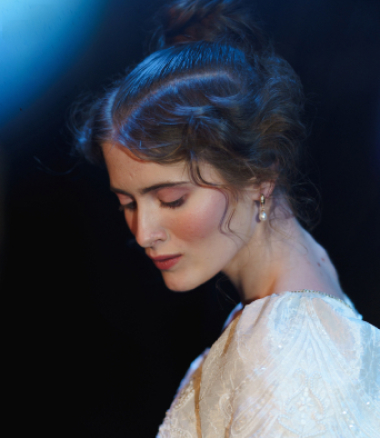
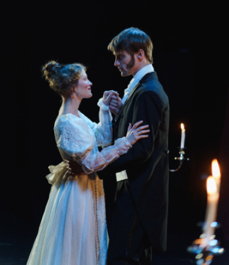

Лидер молодой французской режиссуры, создатель и руководитель независимого театра Emigre выпустил премьеру в театре Эберто 12 февраля. Жан Портье предлагает зрителю физически ощутить ход времени и поиграть с культурными кодами: окунуться в таинственную атмосферу начала XIX века и разгадать мистическую, но в то же время романтическую загадку. «В прошлом году в Монпелье» — вызывающе красивый, изящный спектакль. Постановка сильно отличается от других, минималистичных, работ Портье. Здесь же можно увидеть совсем иную атмосферу, изысканную и дорогую. Двухчасовой спектакль в основе которого старинная мистическая история, где правду невозможно отличить от вымысла.
На фото: режиссер Жан Портье на репетиции спектакля «В прошлом году в Монпелье»
Фотограф: Пьер БушеВ дорогом отеле мужчина уверяет женщину, что они уже встречались год назад в Монпелье. Женщина считает, что этого не было, либо она просто не хочет этого вспоминать. Еще один герой — муж или спутник женщины, седой, взрослый пятидесятилетний мужчина, богатый, молчаливый и, вероятно, делающий возможным ее красивую праздную жизнь. Отношения троицы не определены, причинно-следственные связи нарушены, запутанность сюжета вначале кажется абсурдной. Все подчеркивает, как странно устроен этот мир, давая возможность бесконечного множества трактовок, включая интерпретацию с помощью мифа об Орфее и Эвридике, представление об отеле как о чистилище.

На фото: главные актеры спектакля Обен Шарль и Мари Брюней
Фотограф: Пьер Буше
На фото: главные актеры спектакля Обен Шарль и Мари Брюней
Фотограф: Пьер Буше

На фото: главная актриса Мари Брюней
Фотограф: Пьер БушеЖан Портье предлагает два варианта взаимодействия со спектаклем: «Или зритель постарается реконструировать некую схему, самую линейную из всех ему доступных, выстроить связи, пытаться понять логически построение сюжета и поведение героев – и тогда он найдет эту постановку трудной, если не вовсе недоступной пониманию, абсурдной. Или же, напротив, позволит увлечь себя необычными образами, возникшими перед ним силою голосов актеров, различным шумами, музыкой, ритмом или страстностью героев. Такому зрителю спектакль покажется самым легким из всех увиденных, адресованным лишь его чувствам — способности видеть, слышать, ощущать, чувствовать и волноваться».
На фото: главная актриса Мари Брюней
Фотограф: Пьер Буше

На фото: Мари Брюней и Обен Шарль
Фотограф: Пьер Буше